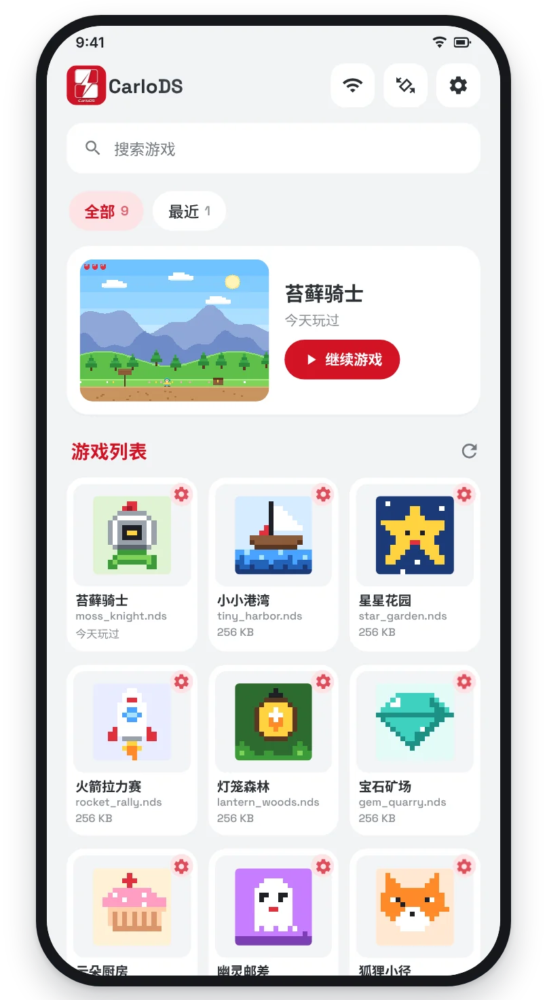
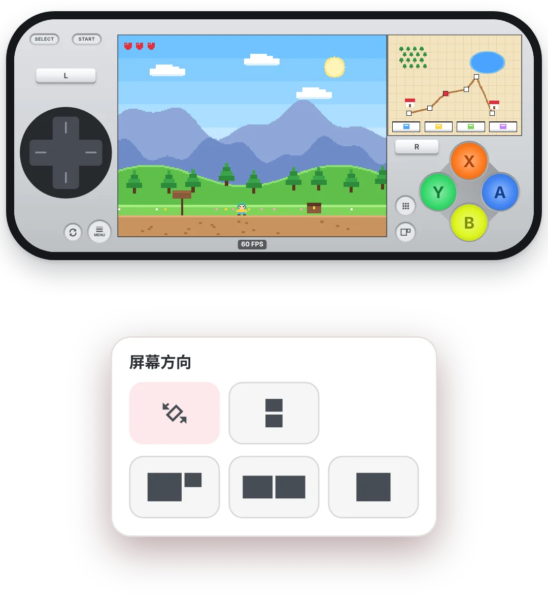
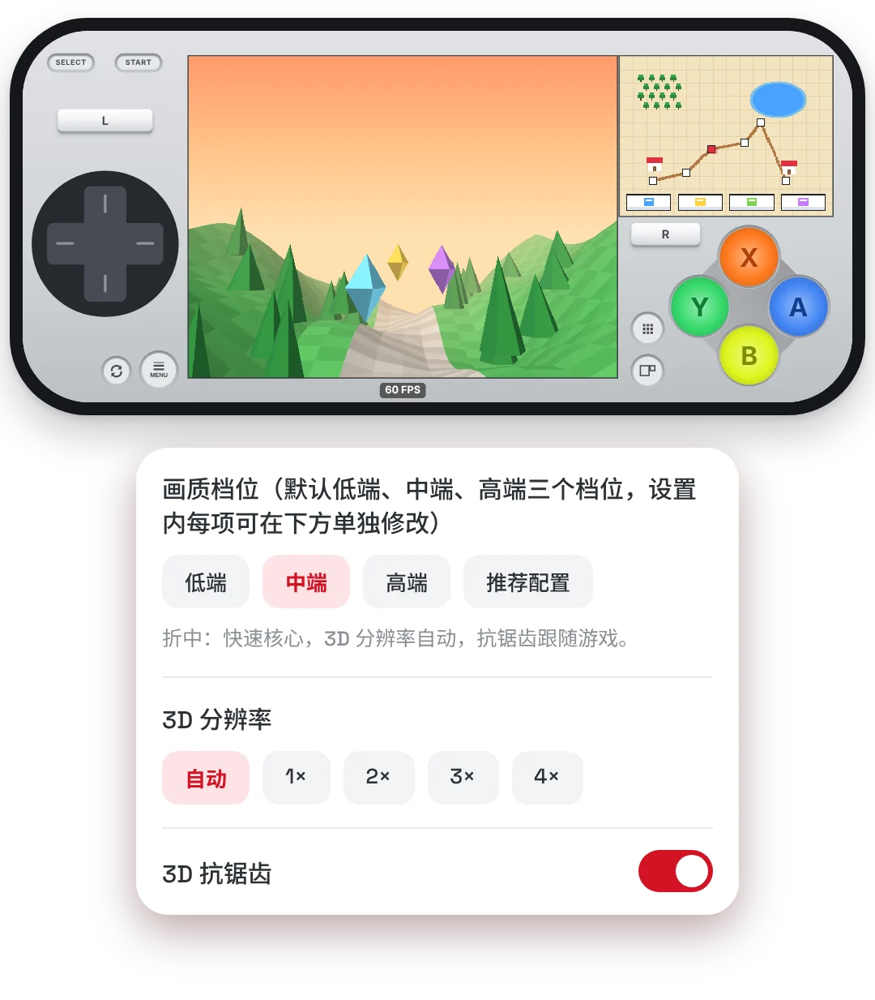
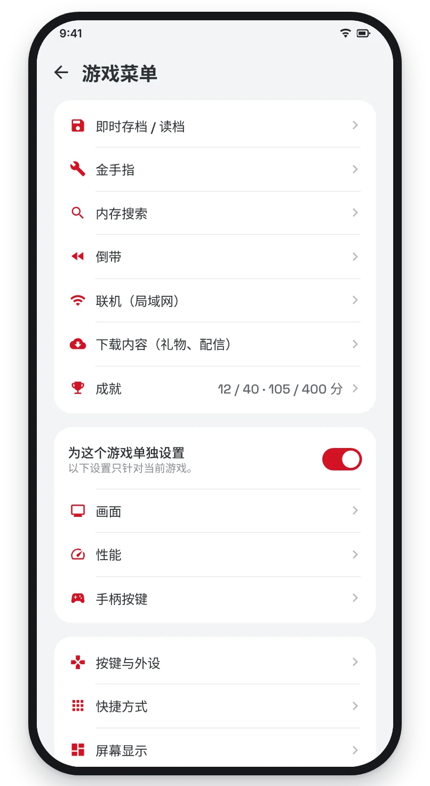
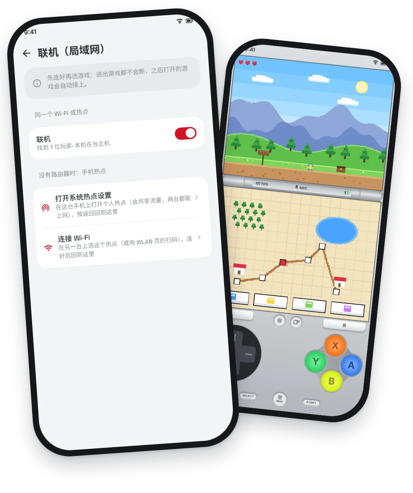
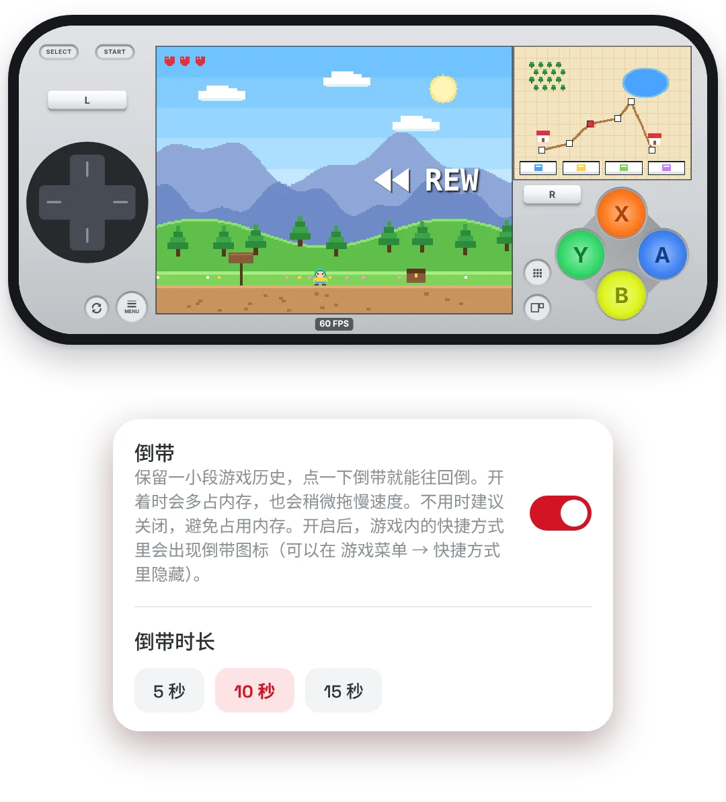

Android NDS 模拟器：自主研发高精度核心，支持高清 3D、本地联机、金手指与即时存档。

自动读出每个游戏的图标和名字，接着上次继续玩

CarloDS 是一款面向 Android 手机与平板的 NDS 模拟器。其模拟核心完全自主研发，涵盖 ARM9 与 ARM7 处理器、2D 与 3D 图形、音频、无线通信及内置 BIOS，并依据大量真机测试结果逐项校准时序与画面，力求还原原机表现。多数游戏无需 BIOS 文件即可运行，并支持 ZIP 格式。
竖屏、一大一小、左右并排、单屏，一键切换

低端、中端、高端一键切换，3D 最高 4 倍清晰

即时存档、金手指、倒带、联机、下载内容、成就

没有路由器？开个手机热点也能连

浮窗里搜数值，游戏照常运行

点一下倒回 5 / 10 / 15 秒，从那一刻接着玩
